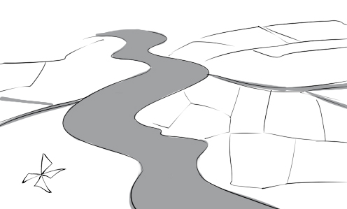
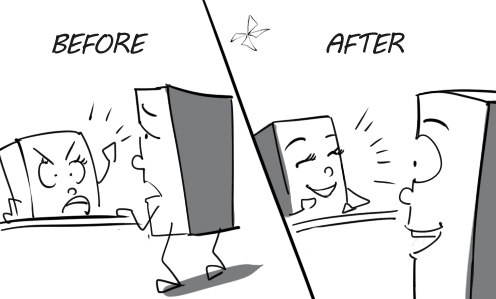

1.
substitute: The patient substitutes his crutches with a wheelchair.
(thay thế) v

2.
municipal: Ho Chi Minh city has 19 municipal districts and 5 suburban districts.
((thuộc) thành phố) a
3.
veritable: Peter is a veritable hero. He risked his life to save the little boy.
(thực, thực sự) a
4.
eviction: I am facing eviction from my apartment because I haven’t paid my rent for months.
(sự đuổi ra khỏi nhà ở) n
5.
unrestrained: The children greeted their father with unrestrained joy.
(quá độ, thái quá) a
6.
aglow: The boy's face was all aglow with delight when he opened his gift.
(ngời lên, rạng rỡ) a
7.
symptom: Walking with difficulty is a symptom of drunkenness.
(triệu chứng) n
8.
profitable: Selling jewelry is one of the most profitable businesses in Vietnam.
(sinh lãi, mang lợi) a
9.
interior: David is painting the interior of his house.
(phần bên trong) n
10.
contender: Peter is competing fiercely with his contender for the champion title.
(đối thủ) n
11.
encroach: The mischievous boy encroached on my farm and stole a chicken.
(xâm phạm, xâm nhập) v
12.
restrict: In my country, speed is restricted to 15 km/h in urban areas.
(giới hạn) v
13.
straighten up: The mother asks her son to straighten up his things on the desk.
(sắp xếp ngăn nắp) v

14.
gnarled: In the dark, the gnarled tree looks like a creepy monster.
(lắm mấu, xương xẩu) a
15.
ancient: Most of ancient animals living in the prehistoric era are very huge.
(xưa, cổ) a
16.
neat: My son knows how to fold his clothes into a neat pile.
(ngăn nắp) a
17.
in charge: The manager asks me who is in charge of designing this product.
(phụ trách)

18.
due: His payment is due tomorrow but he doesn't have any money right now.
(đến hạn) a
19.
anniversary: My parents will celebrate their 30th wedding anniversary tomorrow.
(ngày kỷ niệm) n
20.
initiative: His initiative was well received by his colleagues.
(sáng kiến) n

21.
revision: This plan is in need of revision because it has some mistakes.
(sự sửa lại) n

22.
inadequate: The supplies are inadequate to meet the needs of consumers.
(không đầy đủ) a
23.
subject: Peter was subjected to great danger when he was asked to hand-feed the lions.
(bắt phải chịu) v
24.
prestigious: Le Hong Phong is one of the most prestigious high schools in Vietnam.
(có uy tín, thanh thế) a
25.
retain: Diary writing helps me retain my great memories.
(giữ lại) v
26.
conference: The manager was very angry because some of his employees fell asleep during the conference.
(hội nghị) n
27.
beforehand: I am not surprised by the news because I knew about it beforehand.
(trước) adv

28.
itinerary: His itinerary from Ho Chi Minh city to Hanoi seems too long and tiring.
(hành trình) n
29.
actualize: He will have a chance to actualize his dream when participating in The Voice.
(thực hiện, biến thành hiện thực) v
30.
monopoly: EVN held a monopoly in electricity production and distribution in Vietnam.
(độc quyền) n
31.
adoption: The adoption of a new parking system at Parkson made customers very content.
(sự áp dụng, làm theo) n
32.
axis: The earth revolves on its axis once every 24 hours
(trục) n
33.
balmy: Nothing feels better than taking a walk on a balmy summer's evening.
(dịu, ôn hòa) a
34.
basin: The Cuu Long Basin is in the southern part of Vietnam and covers an area of 25,000 km².
(lưu vực) n
35.
berserk: My mother went berserk when she found out I had failed my exam.
(nổi quạu) a
36.
canal: They use this irrigation canal to provide water for rice fields.
(kênh) n
37.
candor: Many colleagues hate him because of his candor.
(tính ngay thẳng, bộc trực) n
38.
caption: The caption of this photograph is The cutest tiger.
(chú thích) n
39.
counterpart: Young Americans are more romantic than their Asian counterparts.
(bên tương ứng, đối tác) n

40.
decode: The expert is trying to decode this binary code.
(giải mã) v
41.
default: The company is in default because it can't pay its debts.
(sự vỡ nợ) n
42.
deflect: The ball deflected off the post into the goal.
(chệch hướng) v
43.
delta: The Mekong Delta is the biggest rice-growing region in the country.
(châu thổ) n

44.
eerie: There are some eerie silhouettes in the graveyard at night.
(kỳ quái) a
45.
embellish: Mary is embellishing her house with a lot of tinsel for Christmas party.
(trang trí) v
46.
enlist: David enlisted as a soldier in the Iraq war.
(gia nhập quân đội) v
47.
finished: Developed countries import raw materials and export finished products to developing countries.
(hoàn chỉnh) a
48.
flank: They are hiking along the flank of the mountain.
(sườn ) n
49.
gorge: There is a river running along the bottom of the gorge.
(hẻm núi) n
50.
gravitate (toward): Many people gravitated toward California in the 1848 gold rush.
(hướng về, đổ về) v
_v.jpeg)
51.
grim: Andrew is such a nice guy in spite of his grim look.
(dữ tợn, nham hiểm) a
52.
gruelling: The long and gruelling work shift really wore him out.
(làm mệt nhoài) a
53.
headway: My son made remarkable headway with his study.
(sự tiến bộ) n
54.
headquarters: Blueup has its headquarters in Ho Chi Minh City.
(trụ sở chính) n
55.
hollow: These bamboo tubes are hollow inside.
(rỗng) a
56.
inability: Peter's friends always make fun of him because of his inability to swim.
(sự không có khả năng) n
57.
inclusive: I was shocked to find out the inclusive fare for my trip was almost $2,000.
(toàn bộ) a
58.
cacophony: I have to plug my ears because of the cacophony of construction.
(âm thanh chói tai) n
59.
looter: The looter stole a big sum of money from the millionaire's house.
(kẻ cướp) n
60.
meditation: He is so lost in meditation that he doesn't know that the kettle is boiling.
(sự suy ngẫm) n
61.
menace: The industry overdevelopment is a great menace to forests.
(mối đe dọa) n
62.
mingle: The police couldn't recognize the pickpocket because he mingled with the crowd.
(hòa vào) v
63.
morale: The morale of my football team is very high.
(tinh thần, khí thế) n
64.
mount: David is mounting the steps tiredly.
(leo, trèo) v
65.
movingly: The millionaire described his poor and hard childhood very movingly.
(một cách cảm động) adv
66.
mushroom: His company has mushroomed for the past 10 years.
(phát triển nhanh) v
67.
omen: In Vietnam, breaking a mirror is considered a very bad omen.
(điềm) n
68.
outlaw: Robin Hood is the most famous outlaw of all time.
(người sống ngoài vòng pháp luật) n
69.
outset: You have to decide at the outset what major will suit you the best.
(sự bắt đầu) n
70.
overly: My brother is overly fond of rock music.
(quá, quá mức) adv
71.
patron: The billionaire is the patron of many artists.
(người bảo trợ) n
72.
percentage: The percentage of correct answers is twice as high as that of wrong answers.
(phần trăm) n
73.
peril: Peter faces many perils when he worked on the minefield.
(sự nguy hiểm, hiểm họa) n
74.
perish: One man perished in the assault this morning.
(chết, diệt vong) v
75.
pest: Grasshopper is a type of pest that can cause considerable damage to crops.
(vật gây hại) n
76.
prior to: The groom had a wild party with his friends prior to his wedding day.
(trước khi)

77.
reclaim: The farmers reclaimed this piece of land before using it for farming.
(cải tạo (đất)) v
78.
recover: My father is recovering very well from his surgery.
(bình phục) v
79.
recycle: We should recycle household wastes such as bottles, cans…
(tái chế) v
80.
reform: The company decided to reform the customer service to make its clients more content.
(cải cách) v

81.
regardless of: The doctor still treats me well regardless of the fact that I don’t have health insurance.
(bất kể)

82.
region: Andrew enjoys going to coastal regions because of their pure atmosphere.
(vùng, miền) n
83.
render: The artist rendered his love for nature in his painting.
(diễn tả) v
84.
rescue: Superman rescued everybody from the bloodthirsty monster.
(cứu, giải thoát) v
85.
resolve: The CEO has to resolve the issue quickly because the employees are getting angry.
(giải quyết) v
86.
resume: Peter resumes his work after a 30-minute break.
(tiếp tục (sau khi dừng)) v
87.
seaweed: There are many clumps of seaweed floating in the ocean.
(rong, tảo biển) n
88.
conductive: Silver is the most electrically conductive metal.
(có tính dẫn truyền) a
89.
severely: His son was injured severely in the car accident.
(một cách nghiêm trọng) adv
90.
shaft: They are pulling a bucket of coal out of the mine shaft.
(giếng mỏ) n
91.
sharply: Andrew's personality contrasts sharply with that of his twin.
(một cách rõ ràng) adv
92.
siege: The town has been under siege for 3 months.
(sự bao vây) n
93.
sober: Tom is such a sober guy. He never jokes with anyone.
(điềm tĩnh, nghiêm nghị) a
94.
thesis: The student is upholding his thesis in front of the professors.
(luận văn) n
95.
token: The company presented Peter with a sum of money as a token of their appreciation.
(dấu hiệu, biểu hiện) n
96.
trait: Gracefulness is one of the most attractive traits of Vietnamese women.
(nét tiêu biểu, đặc điểm) n
97.
trauma: The child suffered from trauma after his parents died.
(chấn thương (tâm lý)) n
98.
triumph: Finally, the Vietnamese boxer triumphed over his rival in the final.
(chiến thắng, thành công) v
99.
tsunami: A devastating tsunami hit Japan in 2011.
(sóng thần) n
100.
suppress: Alex had to suppress his anger because he didn't want to fight with his brother.
(kìm nén) v